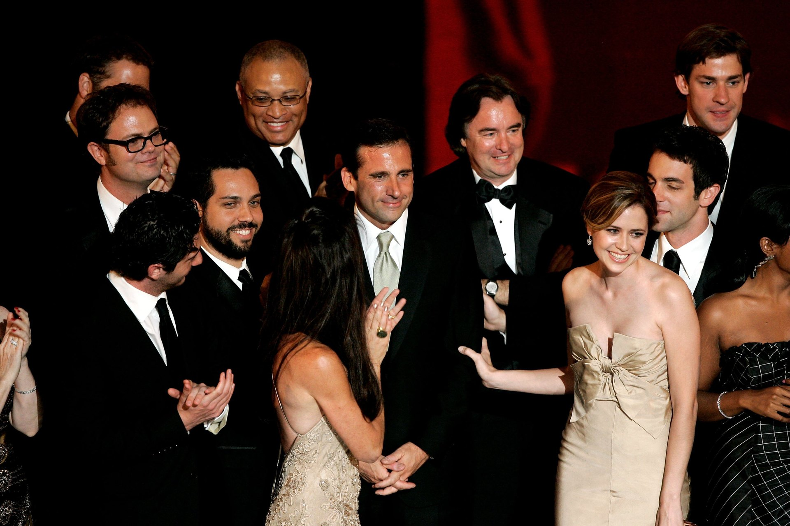
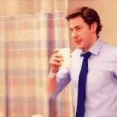
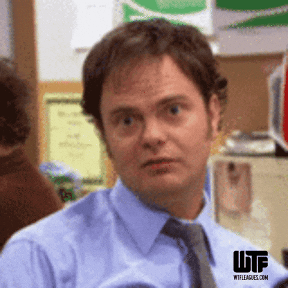

42
Nominaciones Emmy

5
Premios Emmy


The Office recibió 42 nominaciones a los premios Emmy y obtuvo 5 victorias a lo largo de su trayectoria. Entre sus reconocimientos se encuentran premios por dirección, guion y edición, además de nominaciones para actores como Steve Carell, Rainn Wilson y Jenna Fischer

Aunque John Krasinski interpreta a Jim, también puso su cámara detrás de escena. Antes de comenzar la serie viajó a Scranton y grabó imágenes de la ciudad que posteriormente fueron utilizadas en los créditos iniciales.
Los créditos iniciales originales no muestran a todo el elenco. Las imágenes corresponden a los actores que tenían contratos regulares al comienzo de la serie, mientras que otros integrantes del reparto aparecían inicialmente como invitados.



Las reacciones de los personajes frente a situaciones absurdas, especialmente las miradas de Jim hacia la cámara, se volvieron uno de los recursos más reconocibles de la serie.



Rainn Wilson estuvo a punto de protagonizar otra serie antes de conseguir el papel de Dwight. Cuando ese proyecto fue cancelado inesperadamente, pudo presentarse a las audiciones de The Office. Terminó convirtiéndose en uno de los personajes más reconocibles de la serie.
Dunder Mifflin está ubicada en Scranton, pero la mayor parte de The Office fue filmada en Los Ángeles. La ciudad de Pennsylvania aparece principalmente a través de imágenes utilizadas para establecer el lugar y los créditos iniciales.

En 2025 llegó The Paper, una nueva serie situada en el mismo universo. En lugar de Dunder Mifflin, la historia sigue al periódico The Toledo Truth Teller, y el mismo equipo documental se traslada de Scranton a Toledo.Además, Oscar Nuñez vuelve a interpretar a Oscar Martinez, ahora como jefe de contabilidad del periódico.
Y esto es particularmente interesante porque Greg Daniels explicó que no quería simplemente revivir a los personajes originales: buscaba una nueva historia laboral dentro del mismo universo.

Las actrices que interpretaron a Pam Beesly y Angela Martin realizan un podcast de rewatch en el que recorren los episodios de The Office, comparten recuerdos del rodaje y cuentan historias detrás de escena. El proyecto continúa activo y actualmente incluye entrevistas y episodios especiales relacionados con la serie y su universo.